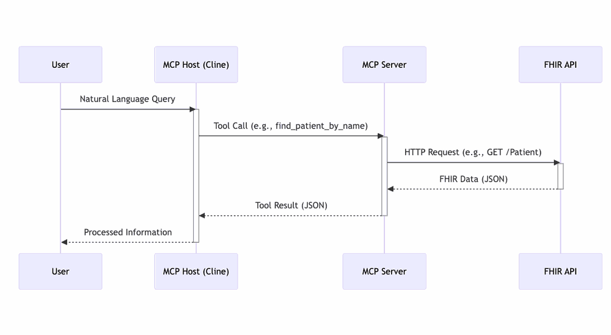
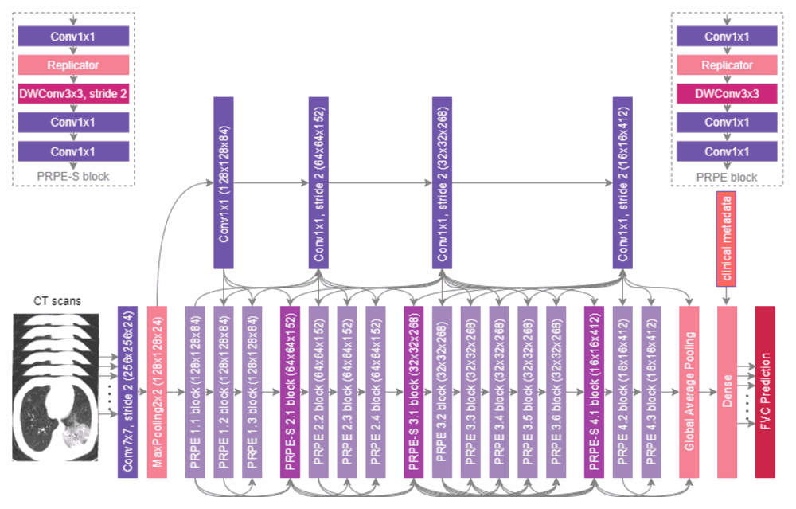
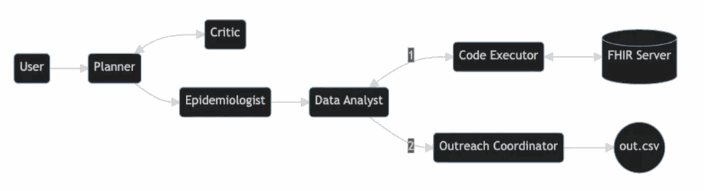
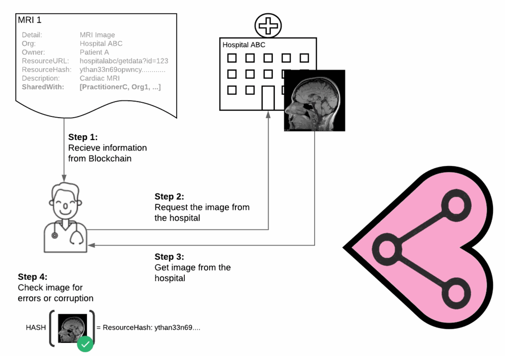

Agents that cooperate
Multi-agent systems that reason over real clinical context, with orchestration, triage and FHIR tools wired together through open protocols.
Open to interesting problems
I'm Michael Lynch, a product leader in Toronto with close to two decades of turning hard ideas into shipped products. Most of my work sits where AI meets clinical care: getting useful systems into the hands of care teams and the patients they serve.
I've led large-scale transformations inside health systems, started a company from scratch, and stayed close enough to the code to keep shipping open source. My graduate research was about building the datasets that teach computers human-like tasks, and that foundation still shapes how I think about AI.
The through-line is translation: taking something genuinely hard — a FHIR server, a clinical workflow, a research model — and turning it into a product a real person can use. Fewer demos that go nowhere; more systems in production where patients feel the difference.
Multi-agent systems that reason over real clinical context, with orchestration, triage and FHIR tools wired together through open protocols.
Interfaces and MCP servers that let care teams and patients question health records in plain language instead of query syntax.
Taking AI from pilot to production across large health systems: driving adoption, cutting clinical workload, owning the roadmap.
Products inside large health systems, research, a startup, and open source.
Led AI product initiatives reaching millions of patients — reducing clinical workload, improving patient engagement, and turning product strategy into operating reality.
A team of AI agents coordinating over Google's A2A protocol. Orchestration, triage and FHIR agents collaborate autonomously on patient care tasks.

Query a FHIR server in plain language: patients named John Smith over 55 taking diphenhydramine
becomes the right API calls.

Co-developed FibrosisNet for predicting pulmonary fibrosis progression, and led deployment of COVID-Net with top pharma and hospitals including Boston Children's.
Open-source tooling that streamlines referrals between family doctors and specialists, so patients don't fall through the gaps.

An early experiment using AutoGen agents (GPT-4, Mixtral) to manage a simulated patient population, testing what AI could take on in healthcare administration.

Co-founded a startup building SaaS for detecting internal data breaches, grown out of my open-source Patient Data Network for secure patient data sharing.
An SDK connecting the open-source OpenMRS medical record system to the Privata.ai platform for secure, audited data access.
Working on AI, healthcare, or somewhere the two meet? I'm always up for a good conversation.